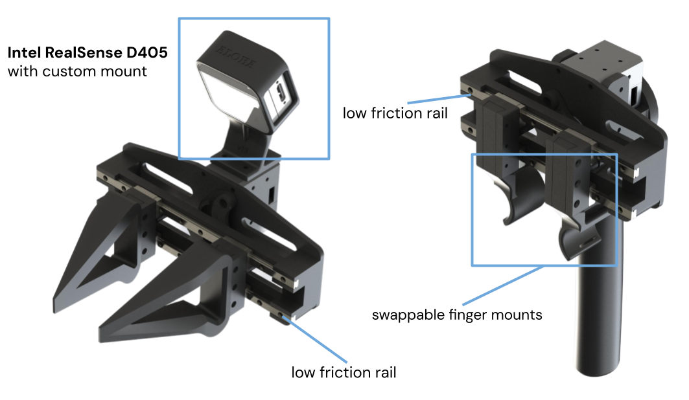
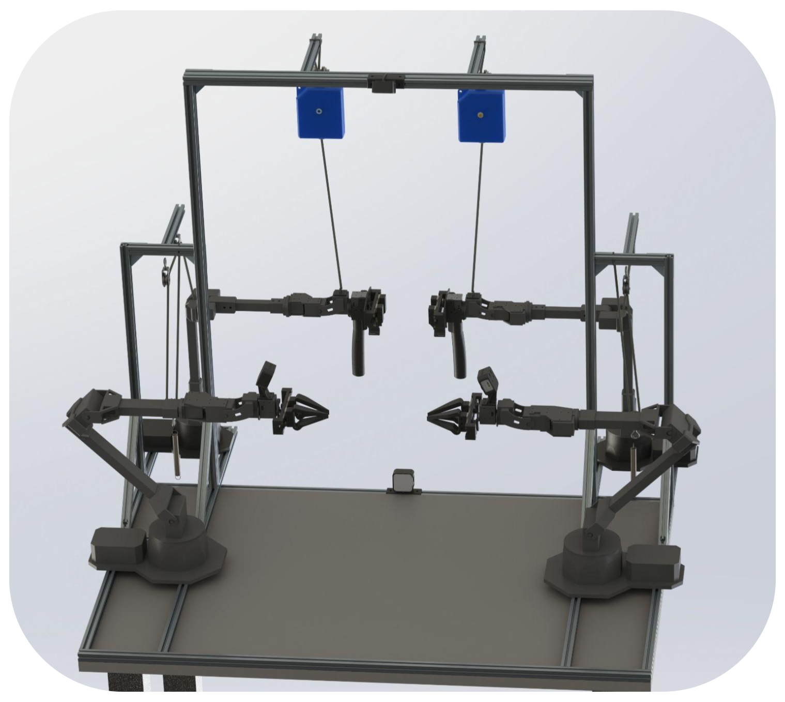
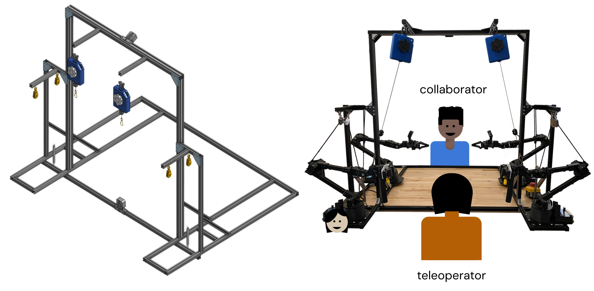
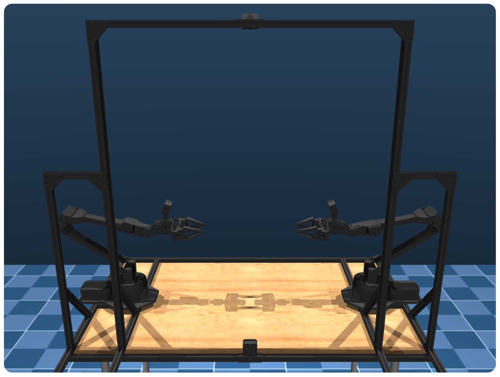

- ALOHA 2 Team
- Jorge Aldeco1
- Travis Armstrong1
- Robert Baruch1
- Jeff Bingham1
- Sanky Chan1
- Kenneth Draper1
- Debidatta Dwibedi1
- Chelsea Finn1,2
- Pete Florence1
- Spencer Goodrich1
- Wayne Gramlich1
- Torr Hage1
- Alexander Herzog1
- Jonathan Hoech1
- Thinh Nguyen1
- Ian Storz1
- Baruch Tabanpour1
- Leila Takayama1,3
- Jonathan Tompson1
- Ayzaan Wahid1
- Sichun Xu1
- Sergey Yaroshenko1
- Kevin Zakka1
- Tony Zhao1,2
Authors listed in alphabetical order.
Correspondence: aloha-2@googlegroups.com
1
 2
2 3Hoku Labs
3Hoku Labs

Abstract
Diverse demonstration datasets have powered significant advances in robot learning, but the dexterity and scale of such data can be limited by the hardware cost, the hardware robustness, and the ease of teleoperation. We introduce ALOHA 2, an enhanced version of ALOHA that has greater performance, ergonomics, and robustness compared to the original design. To accelerate research in large-scale bimanual manipulation, we open source all hardware designs of ALOHA 2 with a detailed tutorial, together with a MuJoCo model of ALOHA 2 with system identification.
ALOHA 2
To support research on complex manipulation tasks, we aim to significantly scale up data collection on the ALOHA platform, including the number of robots in use, the amount of hours of data per robot, and the diversity of data collection. This scaling process shifts the requirements and scope relative to the first ALOHA platform. For ALOHA 2, we build on the strengths of the ALOHA platform while also targeting the following areas for further improvement:
- Performance and Task Range: We seek to enhance key components that enable ALOHA’s performance, including grippers and controllers, to enable a broader set of manipulation tasks.
- User Friendliness and Ergonomics: To optimize data collection at scale, we prioritize user experience and comfort. This includes improvements to the responsiveness and ergonomic design of user-facing systems.
- Robustness: We want to increase system robustness to minimize downtime caused by diagnosisand repairs. This involves simplifying mechanical designs and ensuring the overall ease of maintenance for a larger robot fleet.
To this end, we make the following concerete improvements:
- Grippers: We create a new low-friction rail design for both the leader and follower grippers. For the leader robots, this improves teleoperation ergonomics and responsiveness. For the followers, this improves latency and the force output of the grippers. In addition, we upgrade the griptape material on the fingers to improve durability and grasping of small objects.
- Gravity Compensation: We create a passive gravity compensation mechanism using off-the-shelf components that improves the durability compared to ALOHA’s original rubber band system.
- Frame: We simplify the frame surrounding the workcell, while maintaining the rigidity of the camera mounting points. These changes allow space for both human-robot collaborators andprops for the robot to interact with.
- Cameras: We use smaller Intel RealSense D405 cameras and custom 3D-printed camera mounts to reduce the footprint of the follower arms, which less inhibitsmanipulation tasks. These cameras also have a larger field of view, provide depth, have global shutter, and allow for more customization compared to the original consumer-grade webcams.
- Simulation: We model the exact specifications of the ALOHA 2 robot in a MuJoCo model in MuJoCo Menagerie, which allows improved data collection, policy learning, and evaluation insimulation for challenging manipulation tasks.
Grippers
For smoother teleoperation and improved ergonomics, we replace the original scissor leader gripper design from ALOHA with a low friction rail design with reduced mechanical complexity.
We design and manufacture low-friction follower grippers, replacing the original design from ALOHA. The lower friction reduces perceived latency between leader and follower grippers, significantly improving user experience during teleoperation.
Frame
We redesign the support frame and build it using 20x20mm aluminum extrusions. The frame provides support for the leader robots, gravity compensation system, and provides mount points for the overhead and worms-eye cameras.
Compared to ALOHA, we simplify the design to remove the vertical frames on the side of the table opposite to the teleoperator. The added space allows for diverse styles of data collection. For example, a humanc ollaborator can more easily stand at the opposite side of the workspace and interact with the robot, allowing collection of human-robot interactive data. Additionally, larger props can be placed in front of the table for the robot to interact with.
Simulation
We release a MuJoCo Menagerie model of the ALOHA 2 workcell, useful for teleoperation and learning in simulation. The new model is more physically accurate and has higher visual fidelity than previously released ALOHA models. The realistic model allows fast, intuitive, and scalable simulation data collection.
